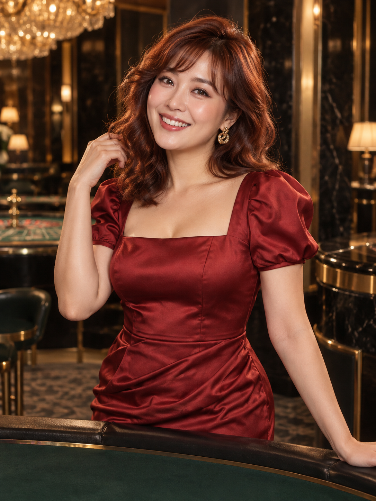
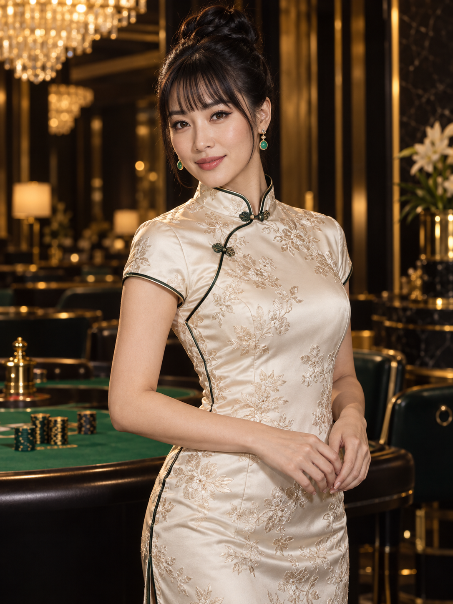
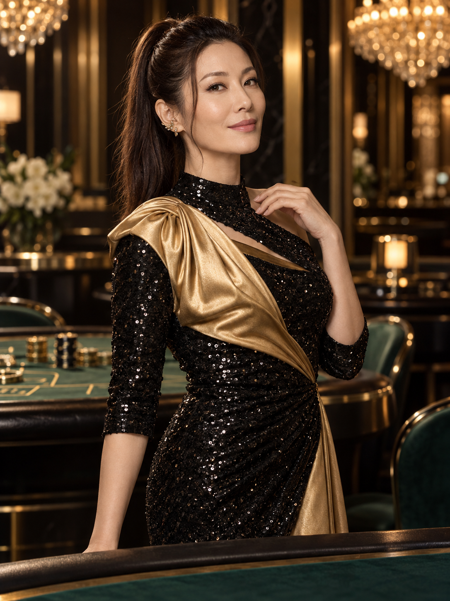
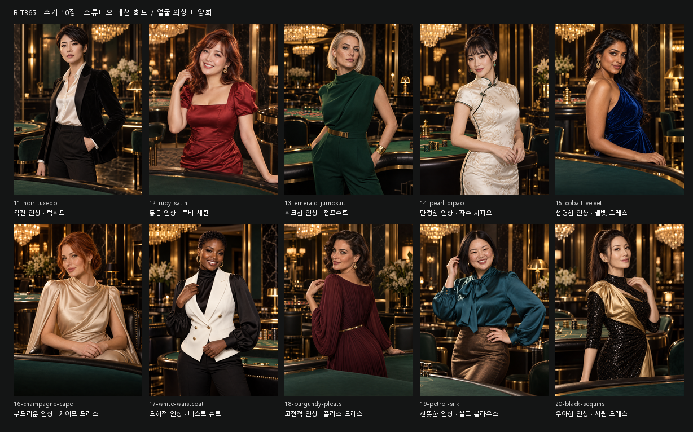
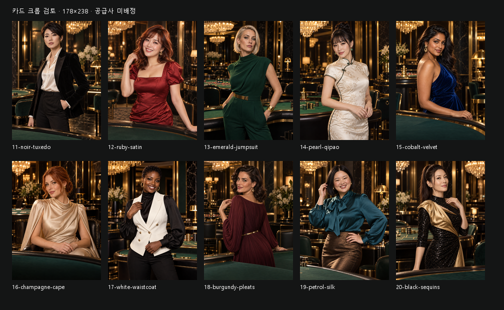

둥근 인상 · 루비 새틴12-ruby-satin
단정한 인상 · 자수 치파오14-pearl-qipao
우아한 인상 · 시퀸 드레스20-black-sequins스튜디오 촬영 화보 감각 / 얼굴형·눈매·표정·헤어·의상 구조 다양화
원본 1086×1448 PNG. 기존 10장 보존. 생성 이미지 후보이며 Figma·사이트에는 미적용.

둥근 인상 · 루비 새틴12-ruby-satin
단정한 인상 · 자수 치파오14-pearl-qipao
우아한 인상 · 시퀸 드레스20-black-sequins
